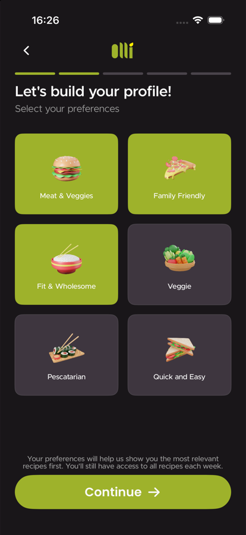
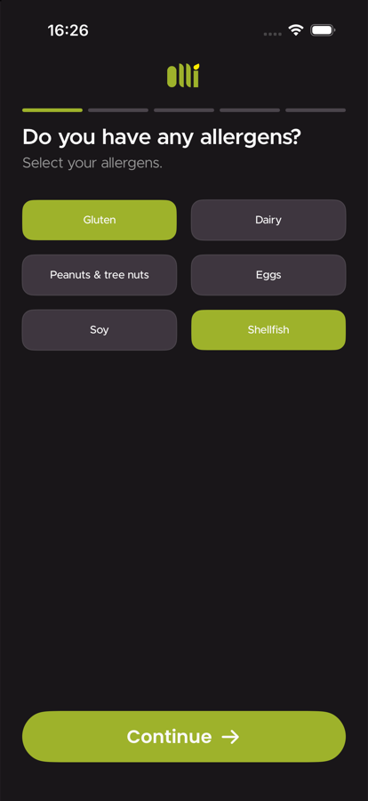
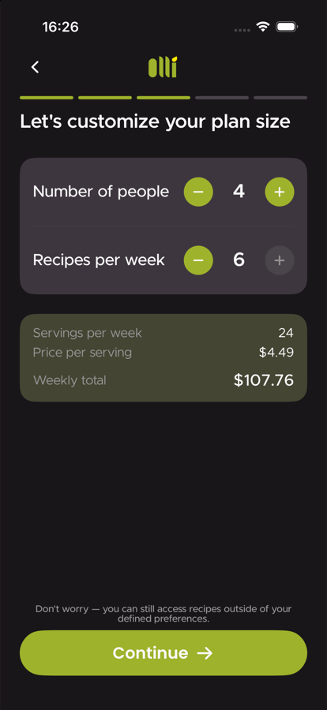
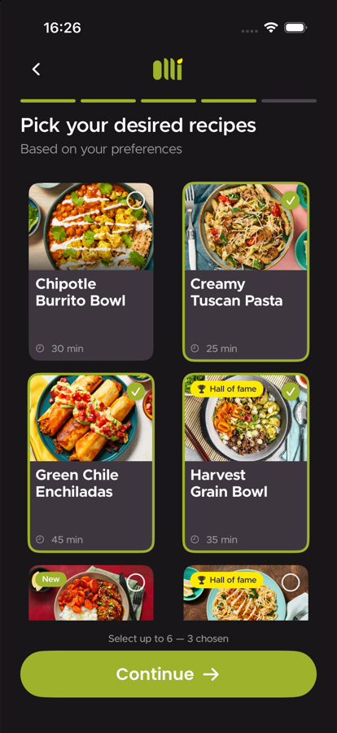
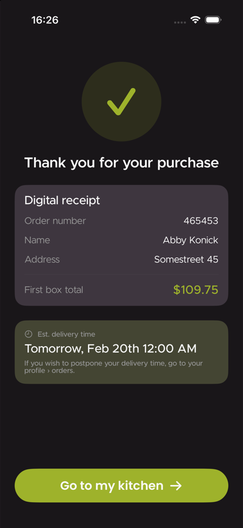
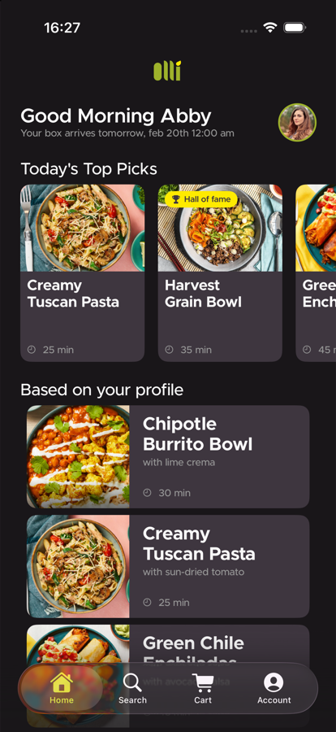
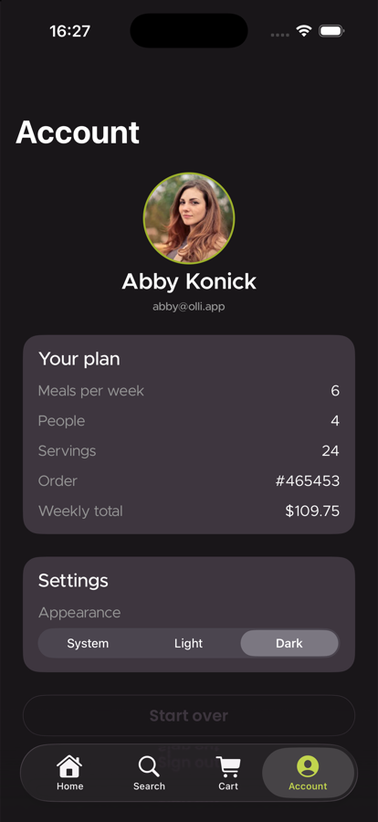
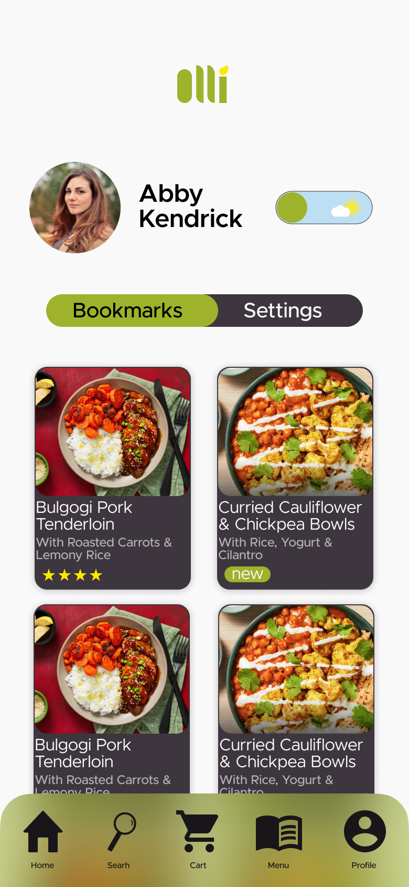
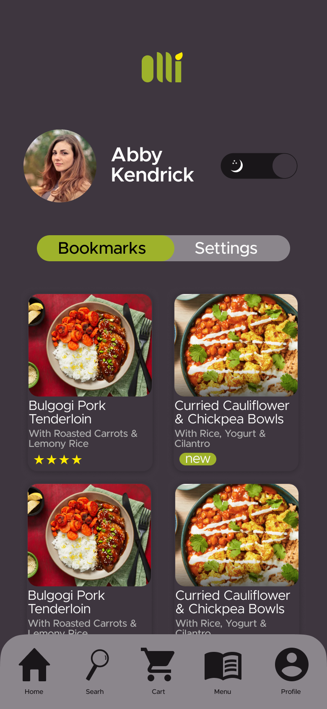
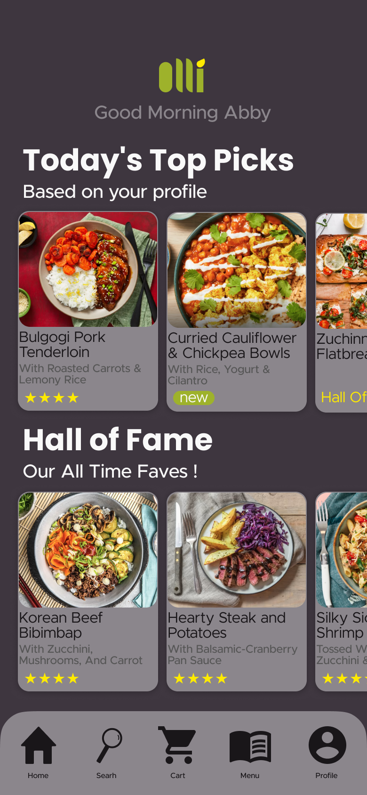

A meal subscription app that brings the ingredients to your door — and teaches you how to cook them.



Olli is a meal subscription service built around the idea that cooking should feel like a choice, not a chore. Users browse a curated selection of recipes, pick what they want to make that week, and the exact ingredients arrive at their door — nothing more, nothing wasted.
The app goes beyond delivery. Each recipe comes with a step-by-step cooking tutorial built directly into the interface — timed, visual, and designed to guide you through the process without ever leaving the app.
The design challenge was building something that felt warm and approachable without losing the clean confidence of a premium product. The result is an interface that respects your time and makes the kitchen feel less intimidating.


The recipe selection screen is the heart of Olli. Users scroll through a curated weekly menu, filter by dietary preference, prep time, or cuisine — and simply tap to add to their box. The UI keeps decisions effortless, letting the food do the talking.


Once the ingredients arrive, cooking mode takes over. Each recipe breaks down into timed, visual steps — keeping the experience calm and focused. No scrolling up to re-read. No second-guessing quantities. Just one step at a time, until it's on the plate.


Olli's subscription model is built around flexibility. Pause for a week, swap a recipe, change your delivery day — all from one clean screen. No hidden steps, no buried settings. The interface makes managing your box as easy as choosing what to cook.
